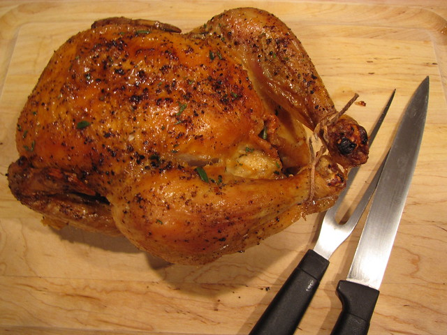

Thomas Keller's Roast Chicken

What You'll Need
- Roasting Pan
- Kitchen Twine
Ingredients
- 2-3lb Whole Chicken
- Salt
- Pepper
- Dijon Mustard
- Unsalted Mustard
- 2 tsp. Finely Chopped Thyme
Steps
- Preheat your oven to 450°F. Dry the chicken inside and out, as well as you can with paper towel.
Some recipes will tell you to rinse your chicken. This is not advised, as the act of rinsing can spread harmful pathogens, and the rinse will not fully remove them from the chicken.
- Season inside the chicken with salt and pepper then truss the bird.
As Jacques Pépin demonstrates, removing the wishbone helps ease the serving process, Thomas Keller also recommends doing this
- Season the outside of the chicken liberally with salt, and then season to taste with pepper.
"Season to taste" in this context means however much you think will be good. Please do not attempt to taste the uncooked bird.
- Place the chicken breast side up in your roasting pan and place in the oven once up to temp.
- Roast until done (165°F - 175°F), about 50 to 60 minutes.
Cooking times vary based on many factors, a cooks second best friend is a good, well calibrated, instant-read meat thermometer.
- Remove chicken from oven once done, and add the thyme to the pan
- Baste chicken with pan juices and thyme.
- Transfer chicken to a cutting board and let rest 15 minutes.
- Remove the twine from the chicken, carve, and serve slathered with butter, mustard on the side.
This dish can be quite an effort if you've never worked with a whole bird, take the best parts for yourself. You deserve it.